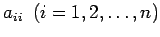
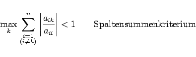
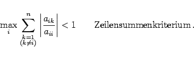

Inhalt Index DeskTop Bronstein

 Numerische Mathematik Numerische Lösung von Gleichungssystemen Lineare Gleichungssysteme Iteration in Gesamt- und Einzelschritten
Numerische Mathematik Numerische Lösung von Gleichungssystemen Lineare Gleichungssysteme Iteration in Gesamt- und Einzelschritten


In der Koeffizientenmatrix des linearen Gleichungssystems (19.25) seien sämtliche Diagonalelemente  von Null verschieden. Dann kann die i-te Zeile nach der Unbekannten xi aufgelöst werden, und man erhält unmittelbar die folgende Iterationsvorschrift, in der  der Iterationsindex ist:
der Iterationsindex ist:
|  | (19.49) |
oder
|  | (19.50) |